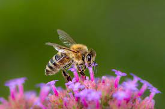
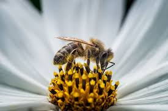

| Info. | Extras | |
|---|---|---|
|  | What is pollination?Pollination is a process of transporting pollen from one flower to another flower. This transfer of pollen occurs from the male floral organs (stamens) from one flower to the female floral organs (stigmas). Here germination and fertilization takes place that makes the production of new seeds and fruits possible, in this process pollinators are the agents responsible for the successful pollination. This process is vital for the survival of the human being since a large part of the food you consume would not exist without this natural process. |
|
|  | Attracting the right species is an important part of this puzzle as well as avoiding pests for three key reasons.1. It Keeps You and Your Family Safe And Reduces 2. It Supports Your Local Ecosystem & Natural Resources 3. You Will Save Money |
|